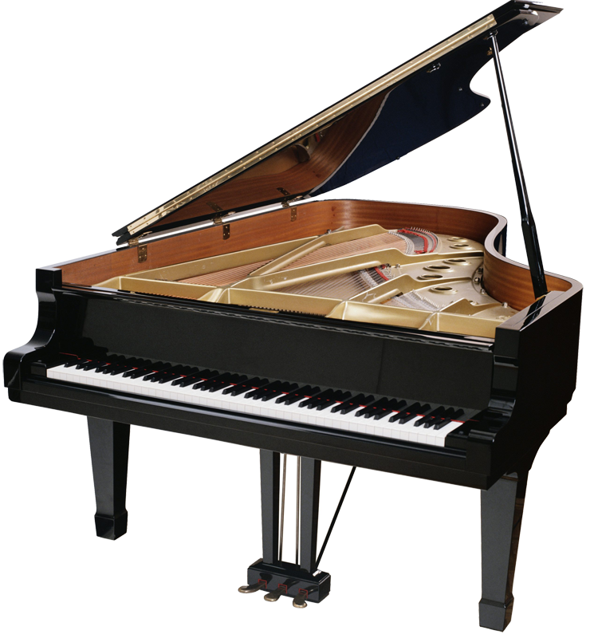
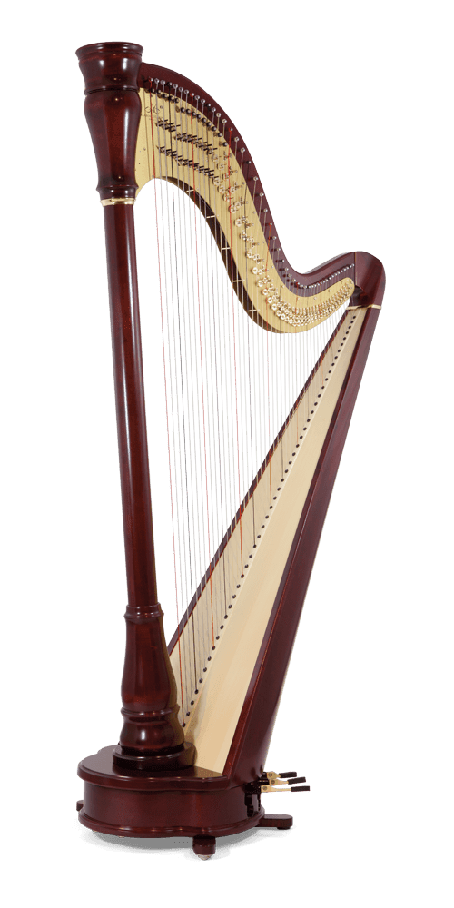

Having trouble choosing what instrument to play?
Here are some information about the Top 10 musical instruments you can play

1. Piano
Piano is one of the most famous instruments in the world. One of the most used musical instruments in the world is the piano. It can be played in almost any musical style, which is why it is so versatile. You may perform solo piano pieces as well. According to research, around 25% of individuals worldwide are can play the piano. The piano is made even more well-known and potent by the fact that it may be played by one person performing for or amused people.
2. Guitar
Because it is lightweight, portable, and polyphonic, the guitar is popular. For many people who want to study an instrument, the guitar is an obvious choice because of its popularity. There are also a lot of learning resources accessible because of its appeal. It may be played individually or in a group, like the piano, and it can help students develop crucial hand-to-hand and hand-eye coordination. Additionally, there are other variations of guitar including electric, acoustic, and bass.
3. Violin
The violin is one of the most well-known and well-liked musical instruments in the world. It is regarded as one of the most exquisite sound-producing instruments ever created. It is also among the oldest, having existed for centuries. It may be really difficult to play. Although the violin is typically associated with classical music, it also works well with rock and country music. It is a great instrument for beginners, which may account for its popularity.

4. Drums
The drums are very popular generally, despite not being as quiet as the other instruments. Drums are essential in a band because they give melody, dynamics, and rhythm. Since drums are an essential component of so many musical genres, it is unlikely that they will ever drop out of the Top 10. However, learning to play drums can be intimidating and challenging for everyone.
5. Saxophone
The saxophone seems to be the most famous wind instrument, and school orchestras are often quite interested in having one. Nearly all musical genres, including polkas, country music, and bad bands, sound fantastic with saxophone playing. Saxophone produces the best ambiance, no matter where it is being performed, and the vibe it generates is fantastic, laid-back, and romantic.
6. Cello
The cello, often known as the violoncello, is a member of the violin family. Because of its lively, bright sounds and warm tones that resemble the pitch of the human voice, the cello has delighted music lovers for hundreds of years. It is most frequently connected to classical music from Europe. The instrument is a part of many different chamber ensembles in addition to being a component of the regular orchestra's string section and the bass voice of the string quartet.
7. Flute
The flute's affordability is one of the factors contributing to its extensive use. Furthermore, it is incredibly portable and simple to learn. Due to a variety of factors, the flute is a unique instrument. It is the only member of the woodwind family that is not typically made of wood, and it lacks a reed. It is also the only instrument that is blown while being held horizontally and does not have an internal mouthpiece. The Flute can also be used as a stepping stone to other instruments.

8. Clarinet
The clarinet's acoustics are distinctive. Clarinets are the only reed instruments having cylindrical bores among the standard modern symphonic woodwinds, which means that the interior hollow area has the same diameter along the whole length of the tube. The clarinet is a wonderful woodwind instrument if you're into jazz. Clarinet is very fun to play, especially with others.

9. Harp
The string family of musical instruments includes the unique Harp. Harp music fosters a welcoming, cozy, and secure atmosphere. It contains several individual strings that are angled toward the soundboard. Fingers are used to pluck the strings. Among all of the stringed instruments, the harp is identified as one of the easiest to play.

10. Trumpet
It's unusual that the only brass instrument on the top 10 list is the trumpet. However, it is among the world's earliest musical instruments. In practically every genre, the king of the brass instruments is used. The trumpet is an essential instrument in the brass sections of symphony orchestras as well as in jazz, R&B, and certain rock bands. Since the trumpet is portable and affordable, the instrument is easy to take with you and may be played solo or in groups, which adds to its popularity.
Next Page >>